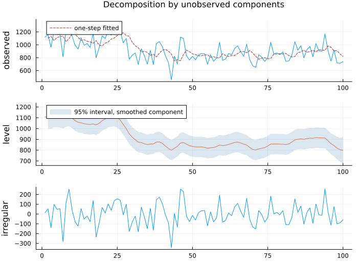
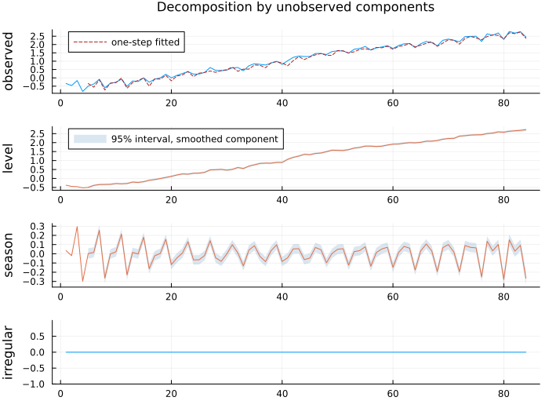
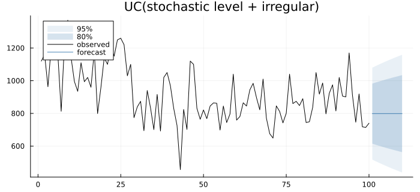
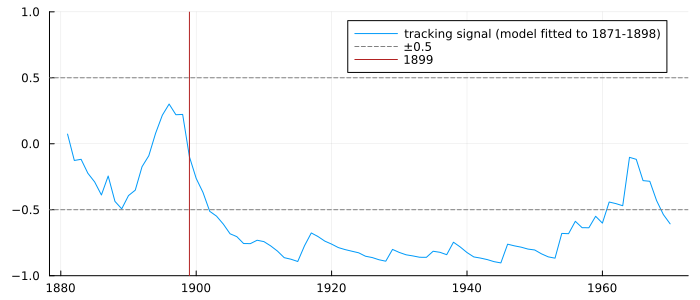
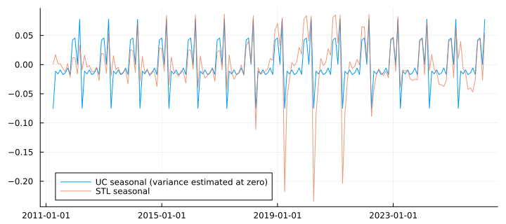

Unobserved Components
An unobserved-components model writes a series as a sum of pieces you can name — a level, a slope, a seasonal, a cycle, an irregular — each allowed to drift by its own amount, and estimates how much each one drifts. What it returns is a decomposition with standard errors: a trend you can plot with a band around it, which stl_decompose cannot give you.
These are also called structural time series models (Harvey 1989; Tsay 2010, §11.3.5). That is unrelated to the structural VAR of Structural VAR; the clash of names predates both.
This chapter uses the state-space notation of API: State Space — the system matrices (T, Z, R, Q, H) of Durbin & Koopman and of Tsay (2010, Eqs. 11.26–11.27, printed pp. 576–577, PDF 603–604). fpp writes the same objects (G, f, W, σ²); the models are identical.
The models
The local level is the simplest: a random-walk level seen through noise.
\[y_t = \mu_t + \varepsilon_t, \qquad \mu_{t+1} = \mu_t + \eta_t, \qquad \varepsilon_t \sim N(0, \sigma^2_\varepsilon),\ \eta_t \sim N(0, \sigma^2_\eta)\]
The local linear trend gives the level a slope that itself drifts, and the basic structural model adds a seasonal whose s effects sum to a zero-mean disturbance:
\[\mu_{t+1} = \mu_t + \beta_t + \eta_t, \qquad \beta_{t+1} = \beta_t + \zeta_t, \qquad \gamma_{t+1} = -\sum_{j=1}^{s-1} \gamma_{t+1-j} + \omega_t\]
What the variances mean, and what their degenerate cases mean (fpp §9.1, printed pp. 94–95, PDF 94–95):
σ²_η = 0: the level does not wander — with no slope, a constant mean.σ²_ζ = 0: the slope is fixed — a deterministic linear trend inside a wandering level.σ²_η = σ²_ζ = 0:y_t = μ_0 + t·β_0 + ε_t, a straight line plus noise.σ²_ω = 0: a seasonal pattern that repeats exactly every year.
A variance of zero is therefore a statement about the series, and fit_uc never clips an estimate to zero to make it one. A tiny positive estimate is reported as the tiny positive number it is.
A local level: the Nile
using TSAnalytics, Plots, DelimitedFiles
using StatsAPI: aic, residuals
nile = readdlm(TSAnalytics.NILE, ',', skipstart = 1)[:, 2] # annual flow, 1871-1970
m = uc_local_level(nile)Unobserved components: stochastic level + irregular
n = 100, 1 left out for the diffuse initialisation, nobs = 99
sigma2.irregular 15108.316
sigma2.level 1463.5472
log-likelihood = -632.5377 AIC = 1269.0754 BIC = 1274.2656
optimiser convergedThe level's variance is about a tenth of the irregular's. That ratio, the signal-to-noise ratio q = σ²_η / σ²_ε, is what decides how far the estimated level moves after a surprise — not the size of either variance on its own.
println("q = σ²_level / σ²_irregular = ", round(m.params[2] / m.params[1], digits = 4))q = σ²_level / σ²_irregular = 0.0969plot(state_decomposition(m); size = (700, 520))
The level falls sharply around 1899, when the first Aswan dam was built, and the band — a 95% interval for the smoothed level, not a forecast interval — is widest at the ends of the sample, where the smoother has data on one side only. The first year has no band: it is consumed by the large-variance start and left out of the likelihood, as statsmodels does.
Choosing between the named models
| Call | Model |
|---|---|
uc_local_level(y) | random-walk level + irregular |
uc_random_walk(y) | random-walk level, no irregular |
uc_local_linear_trend(y) | level + drifting slope + irregular |
uc_smooth_trend(y) | fixed level, drifting slope — an integrated random walk |
uc_bsm(y, s) | local linear trend + seasonal of period s |
Everything else is fit_uc with each component set to :none, :deterministic or :stochastic — never a boolean, because in statsmodels level=True means a fixed level, which surprises nearly everyone. Adding a slope to the Nile:
t = uc_local_linear_trend(nile)
println("slope variance: ", t.params[3])
println("AIC, local level: ", round(aic(m), digits = 2), " with a slope: ", round(aic(t), digits = 2))slope variance: 5.1522636837126335e-17
AIC, local level: 1269.08 with a slope: 1265.72The slope's variance goes to the boundary: there is no drifting slope in the Nile, and a variance of order 1e-17 says so. (The AIC prefers the slope model only because a deterministic slope helps with the post-1899 drop; the AIC also counts one more period consumed by the diffuse start in the larger model, so the comparison is approximate.)
A seasonal: log J&J earnings
Tsay's Example 11.3 (2010, printed p. 606, PDF 633) fits a local level and a dummy seasonal to the log of quarterly Johnson & Johnson earnings per share:
y = log.(dataset("jj").value)
s = fit_uc(y; level = :stochastic, seasonal = 4)Unobserved components: stochastic level + stochastic seasonal(4) + irregular
n = 84, 4 left out for the diffuse initialisation, nobs = 80
sigma2.irregular 2.9252199999999997e-20
sigma2.level 0.0052847883
sigma2.seasonal 0.00085948102
log-likelihood = 65.1404 AIC = -124.2807 BIC = -117.1346
optimiser convergedsd = sqrt.(s.params)
println("σ level = ", round(sd[2], sigdigits = 7), " (Tsay: 0.07269655)")
println("σ seasonal = ", round(sd[3], sigdigits = 7), " (Tsay: 0.02931691)")σ level = 0.07269655 (Tsay: 0.07269655)
σ seasonal = 0.02931691 (Tsay: 0.02931691)Both agree with Tsay's published S-PLUS/SsfPack estimates to about 1e-7 — closer than statsmodels does (1.8e-5). The irregular's variance is at the boundary in all three implementations, and there they differ by a factor of six: a boundary estimate is where an optimiser stops, not a number to compare.
plot(state_decomposition(s); size = (700, 520))
seasonal_kind = :trig replaces the dummy seasonal with trigonometric harmonics (harmonics = k keeps the first k), each with its own variance; cycle = :stochastic adds a stochastic cycle whose frequency and damping are estimated, and ar = p an autoregressive component.
Forecasting
A UC model forecasts by running its components forward, and forecast returns the usual Forecast:
f = forecast(m, 10)
println("point forecast: ", round(f.point[1], digits = 1), " for every year ahead")
println("standard error: ", round(f.se[1], digits = 1), " at h = 1, ", round(f.se[10], digits = 1), " at h = 10")
println("forecast variance added per year: ", round.(diff(f.se .^ 2)[1:3], digits = 1))point forecast: 798.5 for every year ahead
standard error: 143.5 at h = 1, 183.8 at h = 10
forecast variance added per year: [1463.5, 1463.5, 1463.5]plot(f; history = nile, size = (700, 320))
The local level's forecast is flat at the last smoothed level, and its variance grows by exactly σ²_η — the level's variance, 1463.5 — with every step ahead, because each future year adds one more unpredictable level shock. That is simple exponential smoothing's forecast, because the local level is the model behind simple exponential smoothing. Montgomery, Jennings & Kulahci (2008, §4.8, printed pp. 217–220, PDF 230–233) show the same identity from the other side, as exponential smoothing being the optimal forecast of an IMA(1,1) with θ = 1 − λ.
Is this model still right?
A UC model fitted once and left running is the case Montgomery, Jennings & Kulahci's §2.6.3 (printed pp. 60–66, PDF 73–79) is about: monitoring a forecasting model with a tracking signal, a running ratio of the forecast errors' sum to their size that sits near zero while the errors are unbiased and drifts towards ±1 when they stop being so. The smoothed form is a few lines:
function tracking_signal(e; α = 0.1)
Q = D = 0.0
out = fill(NaN, length(e))
for t in eachindex(e)
isnan(e[t]) && continue
Q = α * e[t] + (1 - α) * Q # smoothed error
D = α * abs(e[t]) + (1 - α) * D # smoothed absolute error
out[t] = Q / D
end
return out
endtracking_signal (generic function with 1 method)Fit the Nile model on 1871–1898 only, freeze its parameters, and run it forward over the whole century:
early = uc_local_level(nile[1:28])
frozen = fit_uc(nile; level = :stochastic, params = early.params)
e = copy(residuals(frozen)); e[1:frozen.burn] .= NaN
ts = tracking_signal(e)
alarm = findfirst(t -> t > 10 && abs(ts[t]) > 0.5, eachindex(ts))
println("first year past |0.5|: ", 1870 + alarm, " most extreme: ", round(minimum(ts[11:end]), digits = 2))first year past |0.5|: 1902 most extreme: -0.9# from 1881: the first few errors make a ratio of one by construction
plot(1881:1970, ts[11:end]; label = "tracking signal (model fitted to 1871-1898)",
ylims = (-1, 1), size = (700, 300), legend = :topright)
hline!([-0.5, 0.5]; color = :gray, linestyle = :dash, label = "±0.5")
vline!([1899]; color = :firebrick, label = "1899")
The early data gave a level variance of essentially zero — a constant mean — and after the dam the errors are all of one sign. The signal crosses the alarm three years after the break and keeps going. The model was not wrong for the data it saw; the series changed, and this is how you find out without waiting for someone to look at a plot.
Indian industrial production
The monthly Index of Industrial Production, April 2011 to March 2026, in logs, with a stochastic level and a monthly seasonal:
iip = dataset("iip_india")
yi = log.(iip.value)
mi = fit_uc(yi; level = :stochastic, seasonal = 12)Unobserved components: stochastic level + stochastic seasonal(12) + irregular
n = 180, 12 left out for the diffuse initialisation, nobs = 168
sigma2.irregular 0.0014641382
sigma2.level 0.0024291846
sigma2.seasonal 5.3137121000000004e-21
log-likelihood = 192.1981 AIC = -378.3963 BIC = -369.0244
optimiser convergedThe seasonal's variance is at zero: India's industrial calendar repeats exactly from year to year over these fifteen years, and the estimate says so rather than being clipped there.
using Dates
di = uc_decomposition(mi)
last12 = length(yi) .- (11:-1:0)
for i in sortperm(di.seasonal[last12])[[1, 2, end - 1, end]]
println(monthabbr(iip.date[last12[i]]), ": ", round(di.seasonal[last12[i]], digits = 3))
endApr: -0.075
Aug: -0.017
Jan: 0.046
Mar: 0.078The year ends high in March, at the close of the financial year, and the next one starts low in April — a swing of about fifteen per cent between consecutive months. The level's variance is large enough for it to carry the April 2020 collapse on its own.
st = stl_decompose(yi, 12)
swing(v) = [maximum(v[i:(i + 11)]) - minimum(v[i:(i + 11)]) for i in 1:12:169]
println("UC seasonal swing by year: ", round.(swing(di.seasonal), digits = 2))
println("STL seasonal swing by year: ", round.(swing(st.seasonal), digits = 2))UC seasonal swing by year: [0.15, 0.15, 0.15, 0.15, 0.15, 0.15, 0.15, 0.15, 0.15, 0.15, 0.15, 0.15, 0.15, 0.15, 0.15]
STL seasonal swing by year: [0.05, 0.08, 0.1, 0.12, 0.12, 0.13, 0.13, 0.19, 0.3, 0.32, 0.29, 0.17, 0.11, 0.1, 0.1]plot(iip.date, di.seasonal; label = "UC seasonal (variance estimated at zero)",
size = (720, 320), legend = :bottomleft)
plot!(iip.date, st.seasonal; label = "STL seasonal", alpha = 0.7)
Two answers to the same question. STL's seasonal is allowed to change by construction, and it does: its swing grows from about 0.05 in the first year to more than 0.3 around 2020, because the collapse and recovery leaked into it. The fitted model asked the data whether the seasonal changes and was told no, so the collapse stays in the level where it belongs. The model also gives each component a standard error, and STL does not.
See also
- API: Unobserved Components
- Decomposition — STL and classical decomposition
- State Space and the Kalman Filter — the engine underneath
- Coming from R or Python —
StructTSandUnobservedComponents, and where their numbers differ